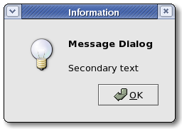

| GTK+ Reference Manual |
|---|
GtkMessageDialogGtkMessageDialog — A convenient message window |  |
#include <gtk/gtk.h>
GtkMessageDialog;
enum GtkMessageType;
enum GtkButtonsType;
GtkWidget* gtk_message_dialog_new (GtkWindow *parent,
GtkDialogFlags flags,
GtkMessageType type,
GtkButtonsType buttons,
const gchar *message_format,
...);
GtkWidget* gtk_message_dialog_new_with_markup
(GtkWindow *parent,
GtkDialogFlags flags,
GtkMessageType type,
GtkButtonsType buttons,
const gchar *message_format,
...);
void gtk_message_dialog_set_markup (GtkMessageDialog *message_dialog,
const gchar *str);
void gtk_message_dialog_format_secondary_text
(GtkMessageDialog *message_dialog,
const gchar *message_format,
...);
void gtk_message_dialog_format_secondary_markup
(GtkMessageDialog *message_dialog,
const gchar *message_format,
...);
GObject +----GtkObject +----GtkWidget +----GtkContainer +----GtkBin +----GtkWindow +----GtkDialog +----GtkMessageDialog
"buttons" GtkButtonsType : Write / Construct Only "message-type" GtkMessageType : Read / Write / Construct
GtkMessageDialog presents a dialog with an image representing the type of message (Error, Question, etc.) alongside some message text. It's simply a convenience widget; you could construct the equivalent of GtkMessageDialog from GtkDialog without too much effort, but GtkMessageDialog saves typing.
The easiest way to do a modal message dialog is to use gtk_dialog_run(), though you can also pass in the GTK_DIALOG_MODAL flag, gtk_dialog_run() automatically makes the dialog modal and waits for the user to respond to it. gtk_dialog_run() returns when any dialog button is clicked.
Example 2. A modal dialog.
dialog = gtk_message_dialog_new (main_application_window,
GTK_DIALOG_DESTROY_WITH_PARENT,
GTK_MESSAGE_ERROR,
GTK_BUTTONS_CLOSE,
"Error loading file '%s': %s",
filename, g_strerror (errno));
gtk_dialog_run (GTK_DIALOG (dialog));
gtk_widget_destroy (dialog);
You might do a non-modal GtkMessageDialog as follows:
Example 3. A non-modal dialog.
dialog = gtk_message_dialog_new (main_application_window,
GTK_DIALOG_DESTROY_WITH_PARENT,
GTK_MESSAGE_ERROR,
GTK_BUTTONS_CLOSE,
"Error loading file '%s': %s",
filename, g_strerror (errno));
/* Destroy the dialog when the user responds to it (e.g. clicks a button) */
g_signal_connect_swapped (dialog, "response",
G_CALLBACK (gtk_widget_destroy),
dialog);
typedef enum
{
GTK_MESSAGE_INFO,
GTK_MESSAGE_WARNING,
GTK_MESSAGE_QUESTION,
GTK_MESSAGE_ERROR
} GtkMessageType;
The type of message being displayed in the dialog.
| GTK_MESSAGE_INFO | Informational message |
| GTK_MESSAGE_WARNING | Nonfatal warning message |
| GTK_MESSAGE_QUESTION | Question requiring a choice |
| GTK_MESSAGE_ERROR | Fatal error message |
typedef enum
{
GTK_BUTTONS_NONE,
GTK_BUTTONS_OK,
GTK_BUTTONS_CLOSE,
GTK_BUTTONS_CANCEL,
GTK_BUTTONS_YES_NO,
GTK_BUTTONS_OK_CANCEL
} GtkButtonsType;
Prebuilt sets of buttons for the dialog. If none of these choices are appropriate, simply use GTK_BUTTONS_NONE then call gtk_dialog_add_buttons().
| GTK_BUTTONS_NONE | no buttons at all |
| GTK_BUTTONS_OK | an OK button |
| GTK_BUTTONS_CLOSE | a Close button |
| GTK_BUTTONS_CANCEL | a Cancel button |
| GTK_BUTTONS_YES_NO | Yes and No buttons |
| GTK_BUTTONS_OK_CANCEL | OK and Cancel buttons |
GtkWidget* gtk_message_dialog_new (GtkWindow *parent, GtkDialogFlags flags, GtkMessageType type, GtkButtonsType buttons, const gchar *message_format, ...);
Creates a new message dialog, which is a simple dialog with an icon indicating the dialog type (error, warning, etc.) and some text the user may want to see. When the user clicks a button a "response" signal is emitted with response IDs from GtkResponseType. See GtkDialog for more details.
| parent : | transient parent, or NULL for none |
| flags : | flags |
| type : | type of message |
| buttons : | set of buttons to use |
| message_format : | printf()-style format string, or NULL |
| ... : | arguments for message_format |
| Returns : | a new GtkMessageDialog |
GtkWidget* gtk_message_dialog_new_with_markup (GtkWindow *parent, GtkDialogFlags flags, GtkMessageType type, GtkButtonsType buttons, const gchar *message_format, ...);
Creates a new message dialog, which is a simple dialog with an icon indicating the dialog type (error, warning, etc.) and some text which is marked up with the Pango text markup language. When the user clicks a button a "response" signal is emitted with response IDs from GtkResponseType. See GtkDialog for more details.
Special XML characters in the printf() arguments passed to this function will automatically be escaped as necessary. (See g_markup_printf_escaped() for how this is implemented.) Usually this is what you want, but if you have an existing Pango markup string that you want to use literally as the label, then you need to use gtk_message_dialog_set_markup() instead, since you can't pass the markup string either as the format (it might contain '%' characters) or as a string argument.
GtkWidget *dialog;
dialog = gtk_message_dialog_new (main_application_window,
GTK_DIALOG_DESTROY_WITH_PARENT,
GTK_MESSAGE_ERROR,
GTK_BUTTON_CLOSE,
NULL);
gtk_message_dialog_set_markup (GTK_MESSAGE_DIALOG (dialog),
markup);
| parent : | transient parent, or NULL for none |
| flags : | flags |
| type : | type of message |
| buttons : | set of buttons to use |
| message_format : | printf()-style format string, or NULL |
| ... : | arguments for message_format |
| Returns : | a new GtkMessageDialog |
Since 2.4
void gtk_message_dialog_set_markup (GtkMessageDialog *message_dialog, const gchar *str);
Sets the text of the message dialog to be str, which is marked
up with the
| message_dialog : | a GtkMessageDialog |
| str : | markup string (see Pango markup format) |
Since 2.4
void gtk_message_dialog_format_secondary_text
(GtkMessageDialog *message_dialog,
const gchar *message_format,
...);Sets the secondary text of the message dialog to be message_format (with printf()-style).
Note that setting a secondary text makes the primary text become bold, unless you have provided explicit markup.
| message_dialog : | a GtkMessageDialog |
| message_format : | printf()-style format string, or NULL |
| ... : | arguments for message_format |
Since 2.6
void gtk_message_dialog_format_secondary_markup
(GtkMessageDialog *message_dialog,
const gchar *message_format,
...);Sets the secondary text of the message dialog to be message_format (with printf()-style), which is marked up with the Pango text markup language.
Note that setting a secondary text makes the primary text become bold, unless you have provided explicit markup.
| message_dialog : | a GtkMessageDialog |
| message_format : | printf()-style markup string (see Pango markup format), or NULL |
| ... : | arguments for message_format |
Since 2.6
"buttons" GtkButtonsType : Write / Construct Only
The buttons shown in the message dialog.
Default value: GTK_BUTTONS_NONE
"message-type" GtkMessageType : Read / Write / Construct
The type of message.
Default value: GTK_MESSAGE_INFO
"message-border" gint : Read
Width of border around the label and image in the message dialog.
Allowed values: >= 0
Default value: 12
"use-separator" gboolean : Read
Whether to put a separator between the message dialog's text and the buttons.
Default value: FALSE
| << GtkInvisible | GtkWindow >> |